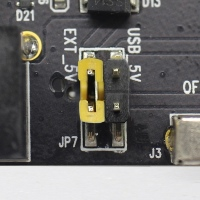
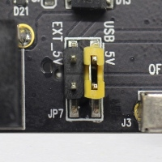

ESP-WROVER-KIT V4.1 დაწყების სახელმძღვანელო¶
ეს სახელმძღვანელო გვიჩვენებს, თუ როგორ დაიწყოთ ESP-WROVER-KIT V4.1 დეველოპერული დაფის გამოყენება და ასევე იძლევა ინფორმაციას მისი ფუნქციონალურობისა და კონფიგურაციის ვარიანტების შესახებ. ESP-WROVER-KIT-ის სხვა ვერსიების აღწერისთვის, გთხოვთ, იხილოთ ESP32 აპარატურის ცნობარი.
რა გჭირდებათ¶
- ESP-WROVER-KIT V4.1 დაფა
- USB 2.0 კაბელი (A-დან მიკრო-B-მდე)
- კომპიუტერი, რომელიც მუშაობს Windows-ზე, Linux-ზე ან macOS-ზე
შეგიძლიათ გამოტოვოთ შესავალი ნაწილები და პირდაპირ გადახვიდეთ განყოფილებაზე აპლიკაციის შემუშავების დაწყება.
მიმოხილვა¶
ESP-WROVER-KIT არის ESP32-ზე დაფუძნებული დეველოპერის დაფა, რომელიც წარმოებულია ესპრესო.
ESP-WROVER-KIT მოიცავს შემდეგ ინტეგრირებულ კომპონენტი :
- ESP32-WROVER-B მოდული
- LCD ეკრანი
- MicroSD ბარათის სლოტი
მისი კიდევ ერთი გამორჩეული თვისებაა ჩაშენებული FTDI FT2232HL ჩიპი - გაუმჯობესებული მრავალინტერფეისიანი USB ხიდი. ეს ჩიპი საშუალებას იძლევა გამოიყენოთ JTAG ESP32-ის პირდაპირი გამართვა USB ინტერფეისის მეშვეობით, ცალკე JTAG გამართვა გარეშე. ESP-WROVER-KIT განვითარებას მოსახერხებელს, მარტივს და ეკონომიურს ხდის.
ESP32 შემავალი/გამომავალი ქინძისთავების უმეტესობა გაყოფილია დაფის ქინძისთავების კონექტორებთან მარტივი წვდომისთვის.
შენიშვნა
ESP32-ის GPIO 16 და GPIO 17 გამოიყენება PSRAM-ისთვის ჩიპის შერჩევისა და საათის სიგნალებად. ნაგულისხმევად, საიმედო მუშაობის უზრუნველსაყოფად, ორი GPIO არ არის დაყოფილი დაფის პინის ჰედერებზე.
ფუნქციონალურობის მიმოხილვა¶
ქვემოთ მოცემულ ბლოკ-დიაგრამაზე ნაჩვენებია ESP-WROVER-KIT-ის ძირითადი კომპონენტი 19 და მათი ურთიერთკავშირი.

ESP-WROVER-KIT-ის ბლოკ-სქემა
ფუნქციური აღწერა¶
ქვემოთ მოცემულ ორ ფიგურაში და ცხრილში აღწერილია ESP-WROVER-KIT დაფის ძირითადი კომპონენტი 19, ინტერფეისები და მართვის საშუალებები.

ESP-WROVER-KIT დაფის განლაგება - წინა მხარე
ESP-WROVER-KIT დაფის განლაგება - უკანა მხარე
ქვემოთ მოცემულ ცხრილში მოცემულია აღწერა შემდეგი ფორმით:
- პირველი სურათის ზედა მარჯვენა კუთხიდან დაწყებული და საათის ისრის მიმართულებით
- შემდეგ გადავიდეთ მეორე სურათზე
| ძირითადი კომპონენტი | აღწერა |
|---|---|
| FT2232 | FT2232 ჩიპი მრავალპროტოკოლიანი USB-სერიული ხიდის ფუნქციას ასრულებს, რომლის დაპროგრამება და კონტროლი შესაძლებელია USB-ის საშუალებით, რათა უზრუნველყოფილი იყოს ESP32-თან კომუნიკაცია. FT2232-ს ასევე აქვს USB-ს JTAG ინტერფეისი, რომელიც ხელმისაწვდომია ჩიპის A არხზე, ხოლო USB-სერიული - B არხზე. FT2232 ჩიპი აუმჯობესებს მომხმარებლისთვის მოხერხებულობას აპლიკაციების შემუშავებისა და გამართვა კომუნიკაციის თვალსაზრისით. იხილეთ ESP-WROVER-KIT V4.1 სქემატური ნახაზი. |
| 32.768 კჰც | გარე ზუსტი 32.768 კჰც სიხშირის კრისტალური ოსცილატორი ემსახურება როგორც საათს დაბალი ენერგომოხმარებით, სანამ ჩიპი ღრმა ძილის რეჟიმშია. |
| 0R | ნულოვანი ომიანი რეზისტორი, რომელიც განკუთვნილია დენის შუნტის ჩანაცვლებისთვის, შეიძლება მოხსნას შედუღებიდან ან შეიცვალოს დენის შუნტით, რათა გაადვილდეს ESP32-ის დენის მოხმარების გაზომვა სხვადასხვა რეჟიმში. |
| ESP32-WROVER-B | ეს EPS32 მოდული აღჭურვილია 64 მბიტიანი PSRAM-ით, რაც უზრუნველყოფს მონაცემთა შენახვისა და დამუშავების მოქნილ და გაფართოებულ შესაძლებლობებს. |
| დიაგნოსტიკური LED-ები | FT2232-ის GPIO პინებთან დაკავშირებული ოთხი წითელი LED ინდიკატორი. განკუთვნილია მომავალი გამოყენებისთვის. |
| UART | სერიული პორტი. FT2232-ისა და ESP32-ის სერიული TX/RX სიგნალები შესაბამისად JP2-ის შიდა და გარე მხარესაა დაყოფილი. ნაგულისხმევად, პინების ეს წყვილი მხტუნავებით არის დაკავშირებული. ESP32-ის სერიული ინტერფეისის გამოსაყენებლად, მოხსენით მხტუნავები და შესაბამის პინებს სხვა გარე სერიული მოწყობილობა შეაერთეთ. |
| სპი | ნაგულისხმევად, ESP32 იყენებს თავის SPI ინტერფეისს ფლეშ მეხსიერება და მოდულის შიგნით არსებულ PSRAM მეხსიერებაზე წვდომისთვის. გამოიყენეთ ეს პინები ESP32-ის სხვა SPI მოწყობილობასთან დასაკავშირებლად. ამ შემთხვევაში, საჭიროა დამატებითი ჩიპის შერჩევის (CS) სიგნალი. გაითვალისწინეთ, რომ ამ ინტერფეისის ძაბვაა 3.3 ვ. |
| CTS/RTS | სერიული პორტის ნაკადის კონტროლის სიგნალები: პინები სტანდარტულად არ არის დაკავშირებული წრედთან. მათ გასააქტიურებლად, შეამოკლეთ JP14-ის შესაბამისი პინები მხტუნავებით. |
| JTAG | JTAG ინტერფეისი. FT2232 და ESP32-ის JTAG სიგნალები შესაბამისად JP2-ის შიდა და გარე მხარეებზეა დაყოფილი. ნაგულისხმევად, ეს ქინძისთავების წყვილი გათიშულია. JTAG-ის ჩასართავად, შეამოკლეთ შესაბამისი ქინძისთავები მხტუნავებით, როგორც ეს ნაჩვენებია ნაწილში დაყენების პარამეტრები. |
| USB პორტი | USB ინტერფეისი. დაფის კვების წყარო, ასევე კომპიუტერსა და დაფას შორის საკომუნიკაციო ინტერფეისი. |
| EN ღილაკი | გადატვირთვის ღილაკი. |
| ჩატვირთვის ღილაკი | ჩამოტვირთვის ღილაკი. დაჭერისას დააჭირეთ. ჩექმა და შემდეგ დაჭერით ინგლისური იწყებს Firmware-ის ჩამოტვირთვის რეჟიმს პროგრამული უზრუნველყოფა სერიული პორტი ჩამოსატვირთად. |
| დენის გადამრთველი | ჩართვა/გამორთვის გადამრთველი. გადართვა მიმართულებით ჩექმა ღილაკი ჩართავს დაფას, გამორთვით ჩექმა თიშავს დაფას. |
| დენის სელექტორი | კვების წყაროს შერჩევის ინტერფეისი. დაფა შეიძლება იკვებებოდეს USB-ის ან 5V შეყვანის ინტერფეისის საშუალებით. აირჩიეთ კვების წყარო ჯამპერით. დამატებითი ინფორმაციისთვის იხილეთ განყოფილება დაყენების პარამეტრები, ჯუმპერის სათაური JP7. |
| 5 ვოლტიანი შეყვანა | 5 ვოლტიანი კვების წყაროს ინტერფეისი შეიძლება უფრო მოსახერხებელი იყოს, როდესაც დაფა ავტონომიურად მუშაობს (კომპიუტერთან არ არის დაკავშირებული). |
| 5 ვოლტიანი ჩართვის LED ინდიკატორი | ეს წითელი LED ინთება, როდესაც დაფას მიეწოდება ენერგია, ან USB ან 5 ვოლტიანი შეყვანა. |
| LDO | NCP1117(1A). 5V-დან 3.3V LDO-მდე. NCP1117-ს შეუძლია მაქსიმალური 1A დენის მიწოდება. დაფაზე არსებულ LDO-ს აქვს ფიქსირებული გამომავალი ძაბვა. თუმცა, მომხმარებელს შეუძლია დაამონტაჟოს LDO რეგულირებადი გამომავალი ძაბვით. დეტალებისთვის იხილეთ ESP-WROVER-KIT V4.1 სქემატური ნახაზი. |
| კამერის კონექტორი | კამერის ინტერფეისი, სტანდარტული OV7670 კამერის მოდული. |
| RGB LED | წითელი, მწვანე და ლურჯი (RGB) სინათლის გამოსხივების დიოდების (LED) კონტროლი შესაძლებელია პულსის სიგანის მოდულაციით (PWM). |
| შემავალი/გამომავალი კონექტორი | ESP32 მოდულის ყველა პინი დაყოფილია პინების ჰედერებად. თქვენ შეგიძლიათ დაპროგრამოთ ESP32 მრავალი ფუნქციის ჩასართავად, როგორიცაა PWM, ADC, DAC, I2C, I2S, SPI და ა.შ. |
| MicroSD ბარათის სლოტი | სასარგებლოა აპლიკაციების შემუშავებისთვის, რომლებიც იყენებენ MicroSD ბარათს მონაცემთა შენახვისა და მოძიებისთვის. |
| LCD | 3.2 დიუმიანი SPI (სტანდარტული 4-მავთულიანი სერიული პერიფერიული ინტერფეისი) LCD-ის დამონტაჟებისა და შეერთების მხარდაჭერა, როგორც ეს ნაჩვენებია ნახაზზე. ESP-WROVER-KIT დაფის განლაგება - უკანა მხარე. |
დაყენების პარამეტრები¶
დაფის ფუნქციონალურობის დასაყენებლად ხელმისაწვდომია სამი ჯუმპერ-ბლოკი. ყველაზე ხშირად საჭირო პარამეტრები ჩამოთვლილია ქვემოთ მოცემულ ცხრილში.
| სათაური | ჯუმპერის პარამეტრი | ფუნქციონალურობის აღწერა |
|---|---|---|
| JP7 |  | ESP-WROVER-KIT-ის კვება გარე კვების წყაროდან |
| JP7 |  | ESP-WROVER-KIT-ის კვება USB-ის საშუალებით |
| JP2 | JTAG ფუნქციონალურობის ჩართვა | |
| JP2 | UART კომუნიკაციის ჩართვა | |
| JP14 |  |
სერიული კომუნიკაციისთვის RTS/CTS ნაკადის კონტროლის ჩართვა |
ESP32 პინების განაწილება¶
ESP32-ის ზოგიერთი პინი/ტერმინალი გამოყოფილია ჩაშენებულ ან გარე აპარატურასთან გამოსაყენებლად. თუ ეს აპარატურა არ გამოიყენება, მაგალითად, თუ არაფერია შეერთებული კამერის (JP4) ჰედერთან, მაშინ ეს GPIO 7 შეიძლება გამოყენებულ იქნას სხვა მიზნებისთვის.
ზოგიერთ პინს, მაგალითად GPIO 0 ან GPIO 2, მრავალი ფუნქცია აქვს და ზოგიერთი მათგანი საერთოა როგორც ჩაშენებულ, ასევე გარე პერიფერიულ მოწყობილობებს შორის. პერიფერიული მოწყობილობების გარკვეული კომბინაციები ერთად ვერ მუშაობს. მაგალითად, SD ბარათს გამოყენებული აპლიკაციის JTAG გამართვა ით დაკავშირება შეუძლებელია, რადგან JTAG-სა და SD ბარათის სლოტს რამდენიმე პინი საერთო აქვს.
სხვა შემთხვევებში, პერიფერიული მოწყობილობები შეიძლება თანაარსებობდნენ გარკვეულ პირობებში. ეს ეხება, მაგალითად, LCD ეკრანს და SD ბარათს, რომლებსაც მხოლოდ ერთი პინი აქვთ, GPIO 21. ეს პინი გამოიყენება LCD-სთვის D/C (მონაცემთა / კონტროლის) სიგნალის, ასევე SD ბარათის სლოტიდან წაკითხული CD (ბარათის ამოცნობის) სიგნალის უზრუნველსაყოფად. თუ ბარათის ამოცნობის ფუნქცია არ არის აუცილებელი, მაშინ მისი გამორთვა შესაძლებელია R167-ის მოხსნით, რათა როგორც LCD-მ, ასევე SD-მ შეძლონ ერთად მუშაობა.
დამატებითი ინფორმაციისთვის იმის შესახებ, თუ რომელი პინები გამოიყენება რომელ პერიფერიულ მოწყობილობებს შორის, გთხოვთ, იხილოთ შემდეგი ნაწილის ცხრილი.
მთავარი შემავალი/გამომავალი კონექტორი / JP1¶
JP1 კონექტორი შედგება 14x2 მამრობითი ქინძისთავებისგან, რომელთა ფუნქციები ნაჩვენებია ქვემოთ მოცემული ცხრილის შუა ორ „I/O“ სვეტში. ორივე მხარეს ორი „გაზიარებული“ სვეტი აღწერს, თუ დაფაზე სად გამოიყენება გარკვეული GPIO .
| გაზიარებულია | შეყვანა/გამოსვლა | შეყვანა/გამოსვლა | გაზიარებულია |
|---|---|---|---|
| არ არის ხელმისაწვდომი | 3.3 ვოლტი | დახრილი | არ არის ხელმისაწვდომი |
| NC/XTAL | IO32 | IO33 | NC/XTAL |
| JTAG, MicroSD | IO12 | IO13 | JTAG, MicroSD |
| JTAG, MicroSD | IO14 | IO27 | კამერა |
| კამერა | IO26 | IO25 | კამერა, LCD |
| კამერა | IO35 | IO34 | კამერა |
| კამერა | IO39 | IO36 | კამერა |
| JTAG | ინგლისური | IO23 | კამერა, LCD |
| კამერა, LCD | IO22 | IO21 | კამერა, LCD, MicroSD |
| კამერა, LCD | IO19 | IO18 | კამერა, LCD |
| კამერა, LCD | IO5 | IO17 | PSRAM |
| PSRAM | IO16 | IO4 | LED, კამერა, MicroSD |
| კამერა, LED, ჩამტვირთავი | IO0 | IO2 | LED, MicroSD |
| JTAG, MicroSD | IO15 | 5 ვოლტი |
ლეგენდა:
- NC/XTAL - 32.768 kHz ოსცილატორი
- JTAG - JTAG / JP2
- ჩატვირთვა - ჩატვირთვის ღილაკი / SW2
- კამერა - კამერა / JP4
- LED - RGB LED
- მიკროSD - MicroSD ბარათი / J4
- LCD - LCD / U5
- PSRAM - ESP32-WROVER-B-ის PSRAM
32.768 kHz ოსცილატორი¶
| . | ESP32 პინი |
|---|---|
| 1 | GPIO |
| 2 | GPIO |
შენიშვნა
რადგან GPIO 32 და GPIO 33 სტანდარტულად მიერთებულია ოსცილატორთან, სიგნალის მთლიანობის შესანარჩუნებლად ისინი არ არიან მიერთებული JP1 შემაერთებელთან. ეს განაწილება შეიძლება შეიცვალოს ოსცილატორიდან JP1-ზე ნულოვანი ომიანი რეზისტორების R11 / R23 პოზიციებიდან შედუღების მოხსნით და მათი R12 / R24 პოზიციებზე ხელახლა შედუღებით.
SPI Flash / JP2¶
| . | ESP32 პინი |
|---|---|
| 1 | CLK / GPIO 6 |
| 2 | SD0 / GPIO 7 7 |
| 3 | SD1 / GPIO 7 8 |
| 4 | SD2 / GPIO 7 9 |
| 5 | SD3 / GPIO 10 |
| 6 | CMD / GPIO 11 |
მნიშვნელოვანი
მოდულის ფლეშ მეხსიერება ავტობუსი დაკავშირებულია JP2 ჯუმპერ ბლოკთან ნულოვანი ომიანი რეზისტორების R140 ~ R145 მეშვეობით. თუ ფლეშ მეხსიერება მეხსიერებას სჭირდება 80 MHz სიხშირეზე მუშაობა, ავტობუსის სიგნალების მთლიანობის გაუმჯობესების მიზნით, შეგიძლიათ მოხსნათ ეს რეზისტორები, რათა გათიშოთ მოდულის ფლეშ მეხსიერება ავტობუსი პინის თავსართიდან JP2.
JTAG / JP2¶
| . | ESP32 პინი | JTAG სიგნალი |
|---|---|---|
| 1 | ინგლისური | TRST_N |
| 2 | MTMS / GPIO 14 | TMS |
| 3 | MTDO / GPIO 15 ტერმინალი | დაგეგმვა |
| 4 | MTDI / GPIO 12 | TDI |
| 5 | MTCK / GPIO 13 | TCK |
კამერა / JP4¶
| . | ESP32 პინი | კამერის სიგნალი |
|---|---|---|
| 1 | არ არის ხელმისაწვდომი | 3.3 ვოლტი |
| 2 | არ არის ხელმისაწვდომი | მიწა |
| 3 | GPIO 27-ე კურსი | SIO_C / SCCB საათი |
| 4 | GPIO | SIO_D / SCCB მონაცემები |
| 5 | GPIO 25-ე კურსი | VSYNC / ვერტიკალური სინქრონიზაცია |
| 6 | GPIO 23-ე კურსი | HREF / ჰორიზონტალური მითითება |
| 7 | GPIO | PCLK / პიქსელის საათი |
| 8 | GPIO | XCLK / სისტემის საათი |
| 9 | GPIO | D7 / პიქსელის მონაცემთა ბიტი 7 |
| 10 | GPIO | D6 / პიქსელის მონაცემთა ბიტი 6 |
| 11 | GPIO 39 | D5 / პიქსელის მონაცემთა ბიტი 5 |
| 12 | GPIO 36 | D4 / პიქსელის მონაცემთა ბიტი 4 |
| 13 | GPIO 19-ე კურსი | D3 / პიქსელის მონაცემთა ბიტი 3 |
| 14 | GPIO 18-ე კურსი | D2 / პიქსელის მონაცემთა ბიტი 2 |
| 15 | GPIO 5 | D1 / პიქსელის მონაცემთა ბიტი 1 |
| 16 | GPIO 4 | D0 / პიქსელის მონაცემთა ბიტი 0 |
| 17 | GPIO 0 ტერმინალი | გადატვირთვა / კამერის გადატვირთვა |
| 18 | არ არის ხელმისაწვდომი | PWDN / კამერის გამორთვა |
- სიგნალები D0 .. D7 აღნიშნავს კამერის მონაცემთა ავტობუსს
RGB LED¶
| . | ESP32 პინი | RGB LED |
|---|---|---|
| 1 | GPIO 0 ტერმინალი | წითელი |
| 2 | GPIO 2 | მწვანე |
| 3 | GPIO 4 | ლურჯი |
მიკროSD ბარათი¶
| . | ESP32 პინი | MicroSD სიგნალი |
|---|---|---|
| 1 | MTDI / GPIO 12 | მონაცემები2 |
| 2 | MTCK / GPIO 13 | CD / DATA3 |
| 3 | MTDO / GPIO 15 ტერმინალი | CMD |
| 4 | MTMS / GPIO 14 | CLK |
| 5 | GPIO 2 | მონაცემები0 |
| 6 | GPIO 4 | მონაცემები1 |
| 7 | GPIO | CD |
LCD / U5¶
| . | ESP32 პინი | LCD სიგნალი |
|---|---|---|
| 1 | GPIO 18-ე კურსი | გადატვირთვა |
| 2 | GPIO 19-ე კურსი | SCL |
| 3 | GPIO | გაუქმება/დადასტურება |
| 4 | GPIO | CS |
| 5 | GPIO 23-ე კურსი | აშშ დოლარი |
| 6 | GPIO 25-ე კურსი | SDO |
| 7 | GPIO 5 | განათება |
აპლიკაციის შემუშავების დაწყება¶
ESP-WROVER-KIT-ის ჩართვამდე დარწმუნდით, რომ დაფა კარგ მდგომარეობაშია და დაზიანების აშკარა ნიშნები არ აქვს.
საწყისი დაყენება¶
გთხოვთ, დააყენოთ მხოლოდ ქვემოთ მოცემულ სურათებზე ნაჩვენები შემდეგი მხტუნავები:
- აირჩიეთ USB, როგორც კვების წყარო JP7 ჯუმპერ ბლოკის გამოყენებით.
- ჩართეთ UART კომუნიკაცია JP2 ჯუმპერ ბლოკის გამოყენებით.
| ჩართვა USB პორტიდან | UART კომუნიკაციის ჩართვა |
|---|---|
სხვა მხტუნავები არ დაამონტაჟოთ.
ჩართეთ დენის გადამრთველი ჩართვაზე, 5 ვოლტიანი ჩართვის LED ინდიკატორი უნდა განათდეს.
ახლა კი განვითარებისკენ¶
გთხოვთ, გააგრძელოთ ESP32 აპარატურის ცნობარი, სადაც სექცია ინსტალაცია ეტაპობრივად სწრაფად დაგეხმარებათ განვითარების გარემოს დაყენებაში და შემდეგ ფლეშ მეხსიერება თქვენს დაფაზე პროექტის მაგალითის განთავსებაში.